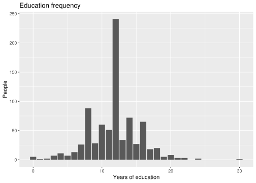
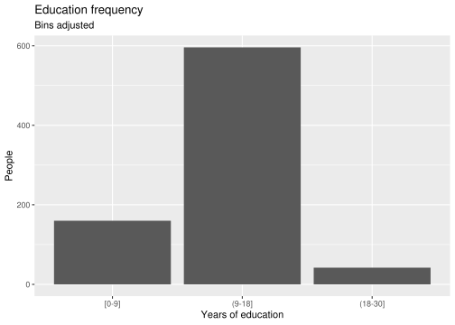
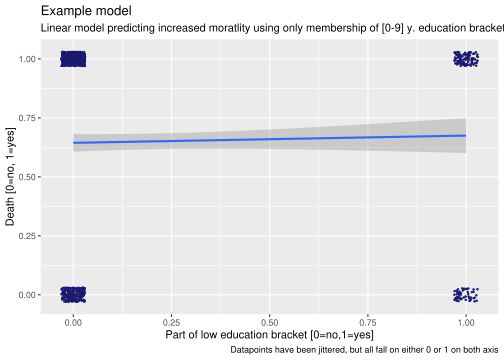

library(tidyverse)
library(here)
library(readr)Education
Importing Packages
Medicine Equality in Education
First we load the cleaned data and filter out all patients that haven’t registered education.
med_edu_na <- read_csv(here("data/med_data_tidy.csv")) |> filter(!is.na(edu))
med_edu <- read_csv(here("data/med_data_tidy.csv")) |> filter(!is.na(edu))
med_edu # A tibble: 798 × 10
age death sex diag_group diag_class income edu charges totcst race
<dbl> <dbl> <chr> <chr> <chr> <chr> <dbl> <dbl> <dbl> <chr>
1 86 1 male Lung Cancer Cancer <NA> 12 NA NA black
2 42 1 female Colon Cancer Cancer $25-$… 11 9914 NA hisp…
3 64 1 female ARF/MOSF w/… ARF/MOSF $25-$… 22 283303 156674. white
4 42 1 male MOSF w/Malig ARF/MOSF >$50k 18 320843 165179. white
5 42 1 male Lung Cancer Cancer >$50k 16 4173 2648. white
6 32 0 female Cirrhosis COPD/CHF/… <NA> 14 231119 101868. black
7 52 1 male Cirrhosis COPD/CHF/… $11-$… 8 13414 8931. white
8 59 1 male CHF COPD/CHF/… >$50k 12 19852 11542. white
9 72 1 male Colon Cancer Cancer <NA> 10 24612 14902. hisp…
10 65 1 female COPD COPD/CHF/… under… 12 84901 40449. white
# ℹ 788 more rowsGetting an overview of the amount of years of education shows that 8-15 years is the most common and will heavily scew the coming analysis.
education_frequency_plot <- med_edu |>
ggplot(mapping = aes(x = edu)) +
geom_bar() +
labs(title = "Education frequency",
center =TRUE) +
xlab("Years of education") + ylab("People")
education_frequency_plot
ggsave(filename = here("results/plots/education_frequency.png"),
plot=education_frequency_plot)Saving 7 x 5 in imageWe do not have enough datapoints to have a meaningful death rate for all amounts of education, so we chose to split them up in intervals.
med_edu <- med_edu |>
mutate(edu = case_when(0 <= edu & edu < 9 ~ "[0-9]",
9 <= edu & edu < 18 ~ "(9-18]",
18 <= edu ~ "(18-30]"),
edu = factor(edu, levels = c("[0-9]","(9-18]", "(18-30]"))) |>
mutate("low" = case_when(edu == "[0-9]" ~ 1,
.default = 0)) |>
mutate("medium" = case_when(edu == "(9-18]" ~ 1,
.default = 0)) |>
mutate("high" = case_when(edu == "(18-30]" ~ 1,
.default = 0))
# we plot the new definitions
med_edu |> ggplot(mapping = aes(x = edu)) +
geom_bar() +
labs(title = "Education frequency",
subtitle = "Bins adjusted",
x = "Years of education",
y = "People",
center =TRUE) +
theme("minimal")
We note, that the 9-18 years bracket make up most of the education data points.
death_rate_plot <- med_edu |>
filter(!is.na(edu)) |>
ggplot(aes(x = edu, y = death)) +
stat_summary(fun = mean, geom = "point") +
stat_summary(fun = mean, geom = "line", group = 1, color = "black") +
geom_hline(yintercept = mean(med_edu_na$death, na.rm = TRUE),
linetype = "dotted", color = "red", linewidth = 1) +
scale_y_continuous(limits=c(0,1)) +
labs(title = "Death rates of people stratisfied by education bracket",
caption = "Dotted line is global death rate in the dataset",
x = "Years in education",
y = "Death rate")
death_rate_plot
ggsave(filename = here("results/plots/education_death_rate.png"),
plot=death_rate_plot)Saving 7 x 5 in imageedu_death_model <- lm(death ~ edu, data = med_edu)
med_edu_low_model <- lm(death ~ low, data = med_edu)
med_edu_medium_model <- lm(death ~ medium, data = med_edu)
med_edu_high_model <- lm(death ~ high, data = med_edu)What kind of models are these?
To show what is happening behind the scenes in our models we can plot out a single model as an example.
model_exampel <- ggplot(data = med_edu,
mapping = aes(x=low,
y=death))+
geom_point(size=0.5,
color='midnightblue',
position=position_jitter(0.03,0.03))+
geom_smooth(formula=y~x,
method = "lm")+
labs(x="Part of low education bracket [0=no,1=yes]",
y="Death [0=no, 1=yes]",
title ="Example model",
subtitle= "Linear model predicting increased moratlity using only membership of [0-9] y. education bracket",
caption = "Datapoints have been jittered, but all fall on either 0 or 1 on both axis")
model_exampel
ggsave(filename=here("results/plots/lm_example.png"),
plot=model_exampel,
height = 5,
width=8)We nest the linear models into a dataframe ready for comparison
df_med_edu_models <- tibble(group = c("edu_low", "edu_medium", "edu_high"),
model = list(med_edu_low_model,
med_edu_medium_model,
med_edu_high_model))
df_med_edu_models |> write_rds(here("data/models/edu.RDS"))